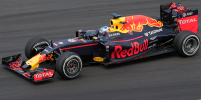

Logo abaixo você verá imagens
Imagem que mostra o meu afeto com a programação
Imagem que eu assisto em todos os finais de semana

Imagem que mostra a soberania de Jeová
Além de todas as outras coisas também reservo tempo para o futebol